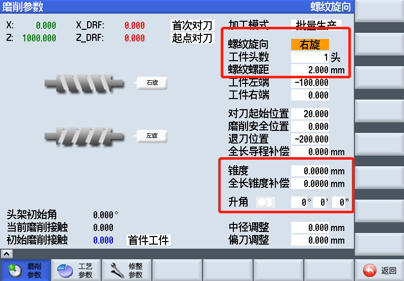

对刀
具体参数设置请参考磨削界面
- 打开磨削界面
- 设置工件基本参数(螺距/旋向/升角/头数)
- 手动将X轴向接近工件外圆位置，记录X坐标到对刀起始位置
- 手动将X轴向后开到安全位置，记录X坐标到退刀位置
- 开动机床设置工件左右端和磨削/对刀起始位置
- 点亮手动对刀键，启动程序
- 点亮DRF键，选择合适手轮步率(1/10/100)
- 开始插补动作后，通过手轮控制将砂轮放置到工件槽内
- 对刀完成后点击退刀键，砂轮向后开到退刀位置程序结束，关闭手动对刀键



提示
- 对刀时砂轮默认转速1500转，如果需要更改速度，手动修改主程序内：对刀时砂轮转速
- 摇动手轮时将机床倍率调到最小
- 对刀位置后将X轴后退0.1左右保证安全